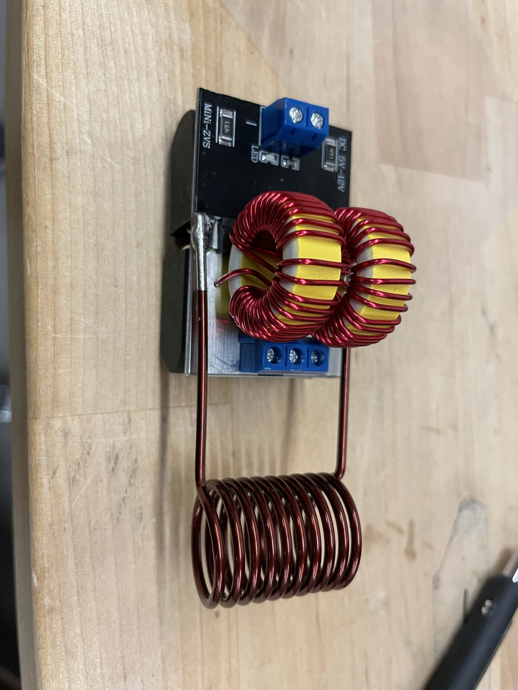
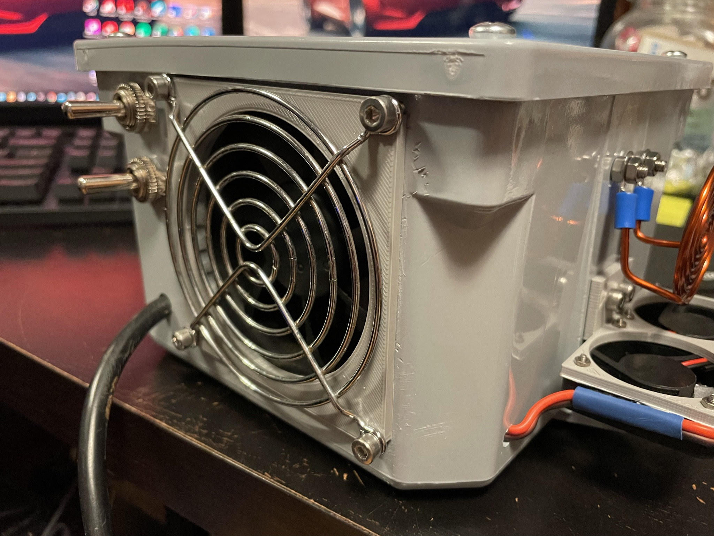
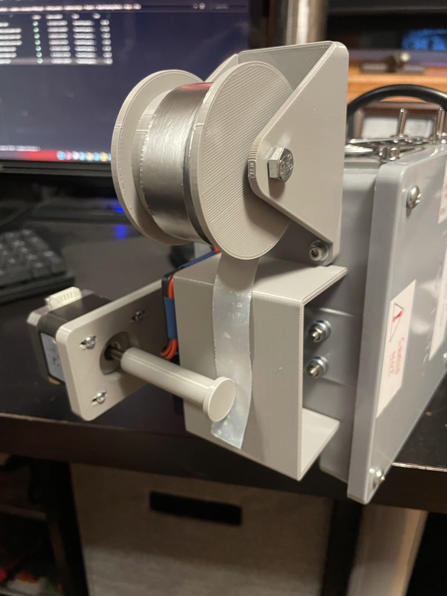
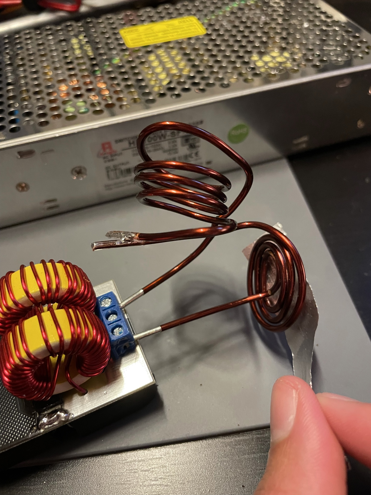
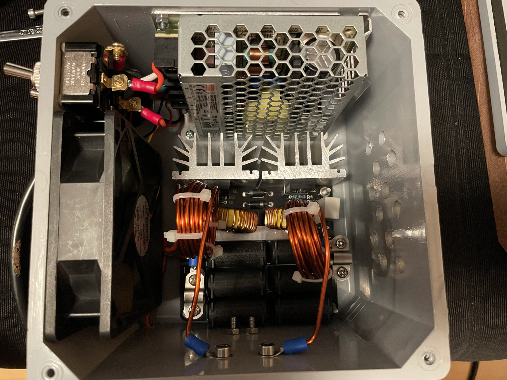
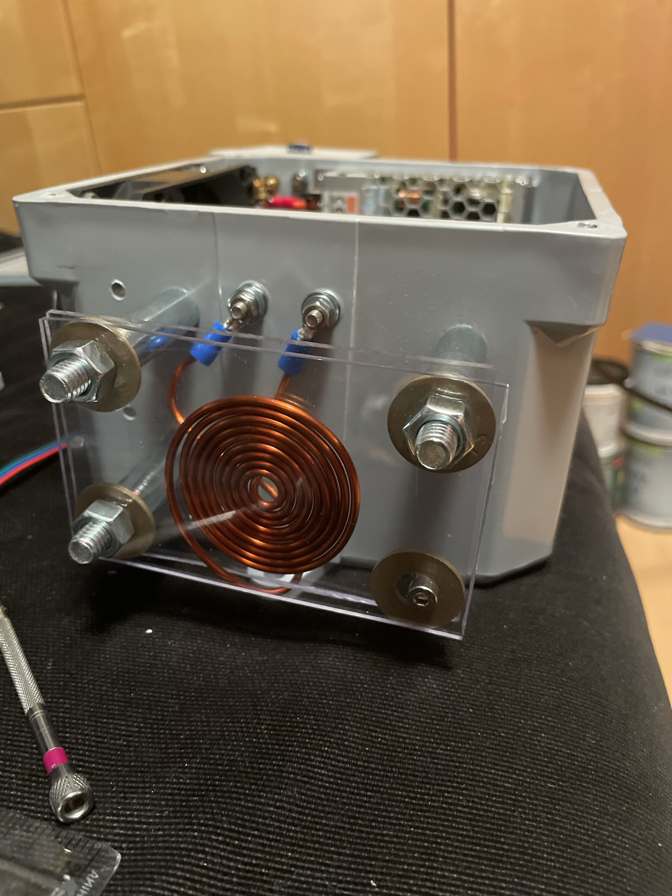
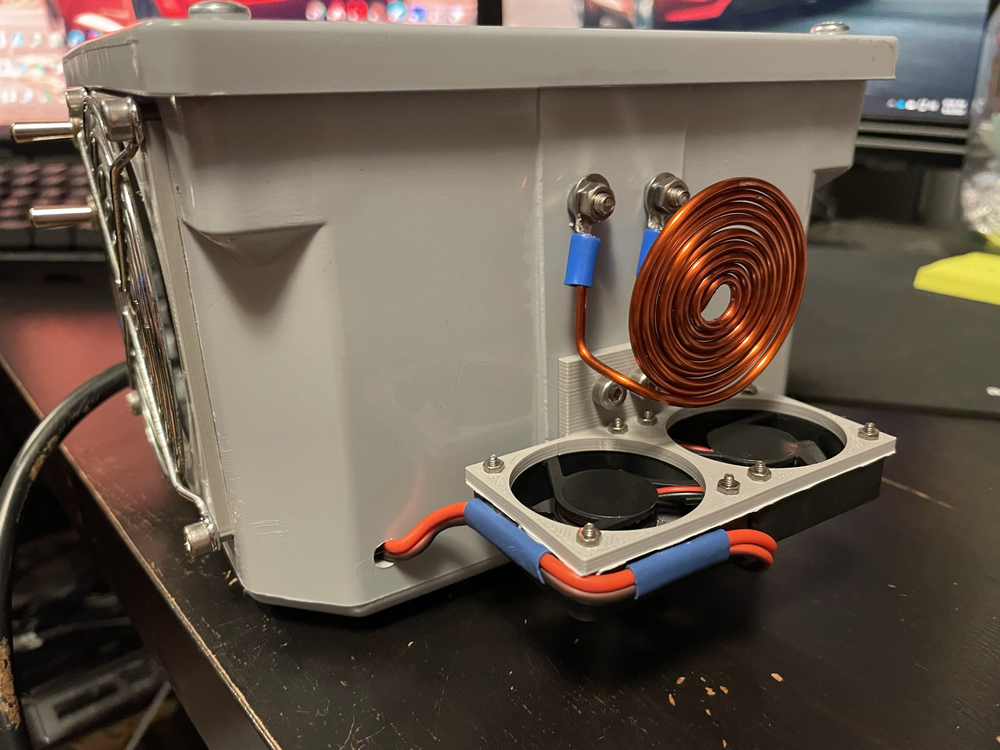
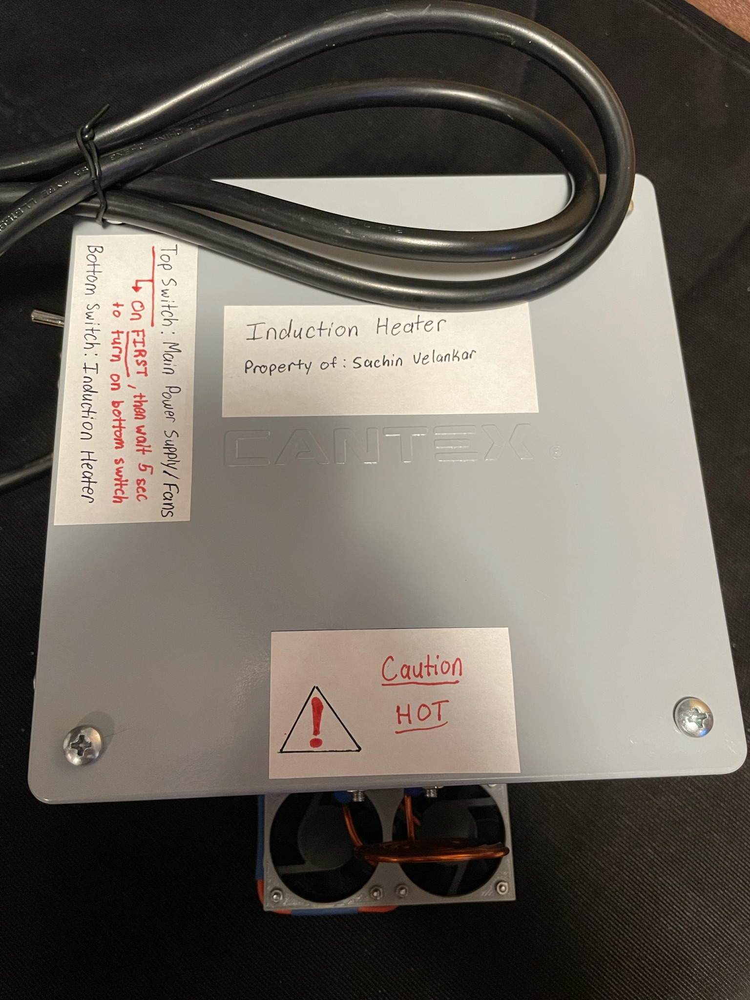
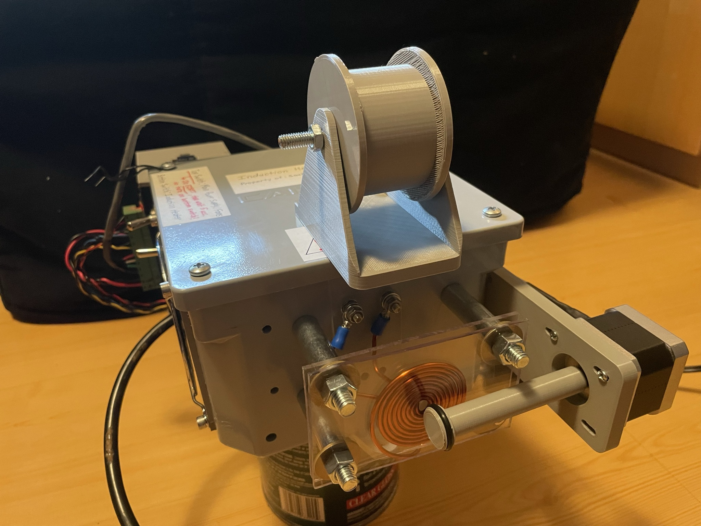
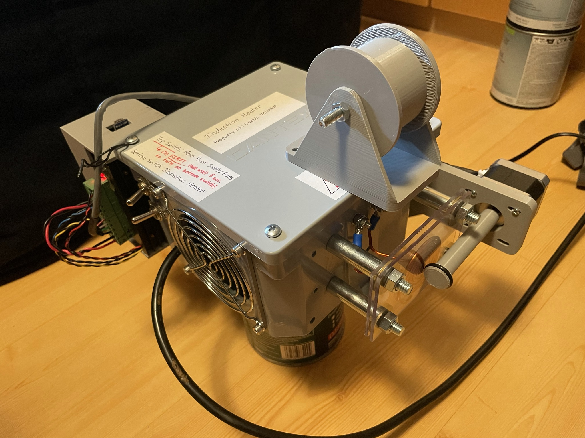

Induction Heater and Feeder System
This project was made for a research position I had while at school. Our research group was tasked with creating a heating device used in thin-film origami applications.
Basically, if you take a piece of standard aluminum foil, bond a layer of certain types of plastic to it (like scotch tape), and heat the aluminum foil and plastic bilayer,
the cooling process induces a shrinking force mismatch between the layers, allowing it to bend.
The device I created was meant to take in a roll of aluminum and plastic trilayers (plastic-aluminum-plastic) and heat the sample roll to a temperature to which the cooling process would
yield a siginicant bending angle. In our research, we also looked into programming shapes into the trilayers we were heating, which was done by damaging the plastic layer within the trilayer
with a laser. Once the defects are programmed in, the strip of trilayer would be fed into the induction heater and would bend according to the defect created while cooling.
The heating mechanism is non-contact, meaning that the trilayer strip doesn't come in contact with a hot surface. Rather, the copper coil seen in the photos below carries an alternating current
which induces eddy currents into the aluminum within the trilayer. This heating is very uniform and provides even heating to both plastic layers. This is very favorable for the conditions of our experiments.
Any sort of heating provided through a method of contact to the plastic layers would prove very difficult to get both plastic layers to heat equally.
The induction heater was iterated many times. The final iteration is housed in an enlosure with proper cooling to provide airflow to the high-current induction circuitry inside. It
also protects the user by enclosing all the power connections. The final function of the induction heater was to feed strips of trilayer samples through the induction zone at a constant speed.
To do this, a stepper motor was used and programmed to be very easy to use for those of us in our research group.
Photo Gallery









